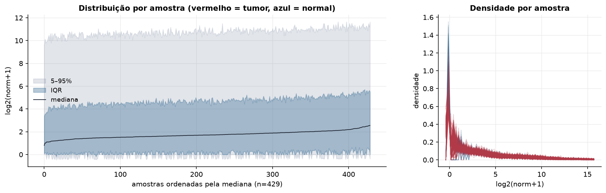
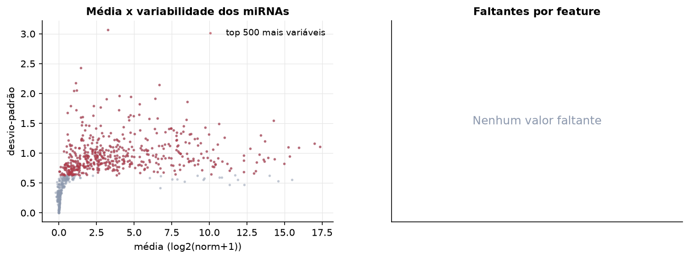
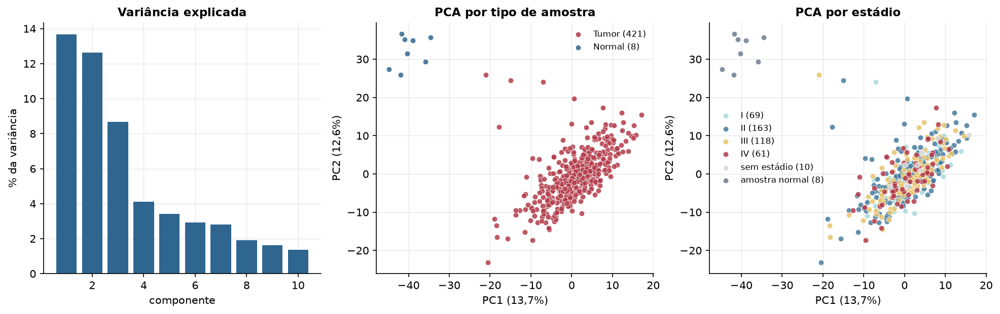
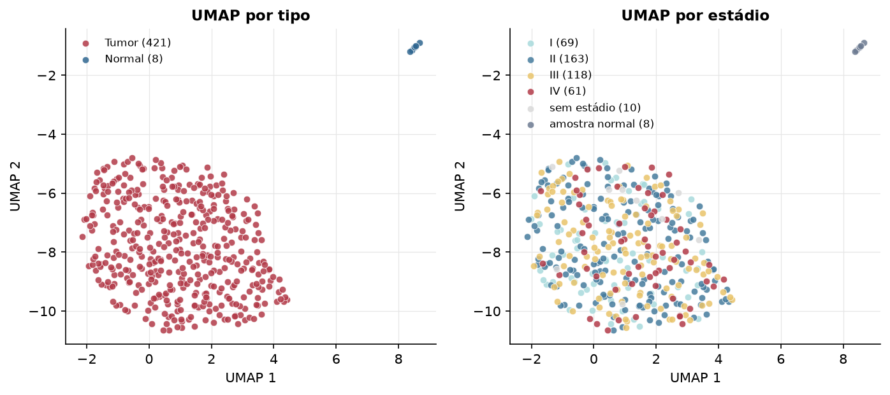
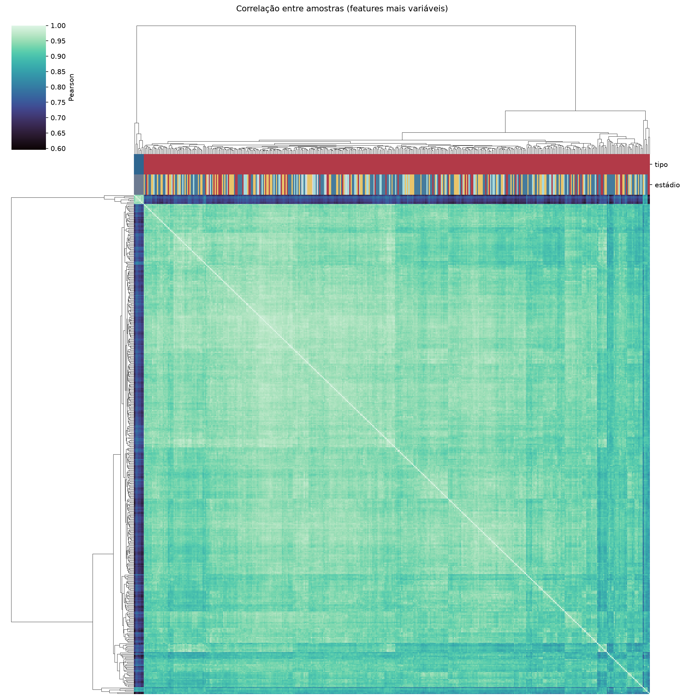
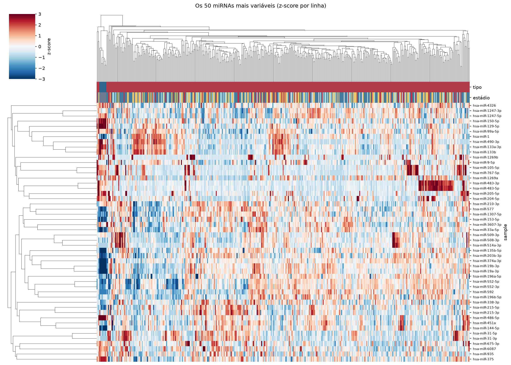
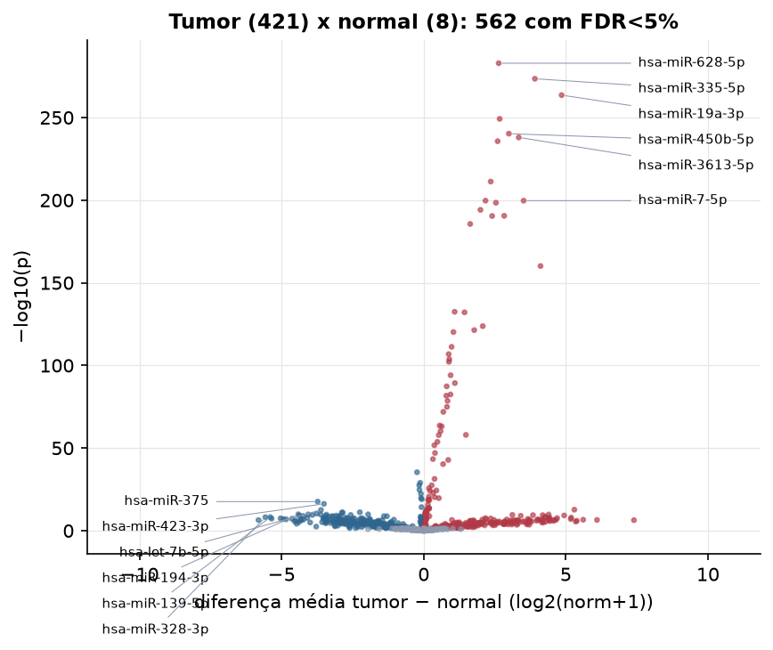
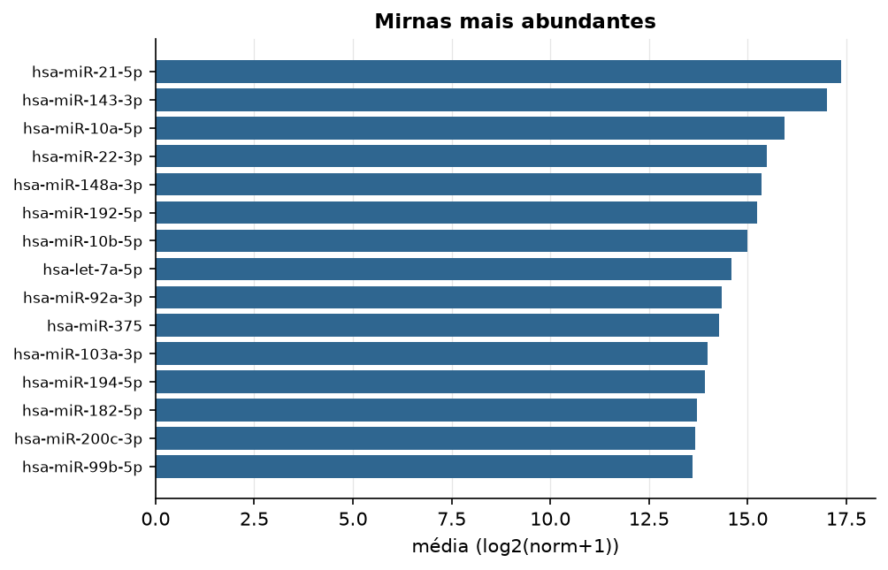

COAD · miRNA-seq (PanCanAtlas)
miRNA maduro, normalizado e corrigido por lote (EB), log2(x+1) · gerado em 21/10/2026 20:31
743miRNAs
421amostras tumorais
8amostras normais
0,0%valores faltantes
Fonte: PanCanAtlas (pancanMiRs_EBadjOnProtocolPlatformWithoutRepsWithUnCorrectMiRs_08_04_16.xena)
Fita madura (5p/3p) já normalizada. As contagens brutas por precursor estão no relatório de contagens.
Principais resultados
- 743 miRNAs medidos em 429 amostras (421 tumorais e 8 normais); 0,0% dos valores estão faltando.
- Os dois primeiros componentes principais explicam 13,7% e 12,6% da variância das features mais variáveis.
- Correlação mediana entre amostras: 0,94.
- Amostras com correlação muito abaixo das demais (possíveis outliers técnicos): TCGA-A6-2680-11, TCGA-AA-3527-11, TCGA-CA-5254-01, TCGA-A6-5664-01, TCGA-CA-5255-01, TCGA-A6-2685-11, TCGA-AA-3525-11, TCGA-A6-2683-11, TCGA-AA-3520-11, TCGA-A6-2684-11.
- Tumor x normal: 562 miRNAs diferentes com FDR < 5% (301 maiores no tumor, 261 maiores no normal; 8 pacientes têm o par tumor-normal).
- Mais aumentados no tumor: hsa-miR-628-5p, hsa-miR-335-5p, hsa-miR-19a-3p, hsa-miR-454-3p, hsa-miR-450b-5p, hsa-miR-3613-5p, hsa-miR-369-3p, hsa-miR-590-3p.
- Mais reduzidos no tumor: hsa-miR-548y, hsa-miR-449c-5p, hsa-miR-449b-5p, hsa-miR-3681-5p, hsa-miR-105-3p, hsa-miR-449b-3p, hsa-miR-892a, hsa-miR-375.
- Associações clínicas com p < 0,05 nos componentes principais: PC3 com estádio (p=0.00024); PC3 com idade (p=0.019); PC2 com sobrevida (p=0.035).
Distribuição dos valores


Estrutura das amostras




Tumor x normal

Features mais diferentes entre tumor e normal
| sample | diferenca_tumor_menos_normal | t | p | fdr |
|---|---|---|---|---|
| hsa-miR-628-5p | 2.64 | 93.675 | 1.37e-283 | 1.01e-280 |
| hsa-miR-335-5p | 3.911 | 88.733 | 3.53e-274 | 1.31e-271 |
| hsa-miR-19a-3p | 4.852 | 83.787 | 2.83e-264 | 6.99e-262 |
| hsa-miR-454-3p | 2.673 | 77.048 | 6.49e-250 | 1.2e-247 |
| hsa-miR-450b-5p | 2.997 | 73.09 | 5.83e-241 | 8.63e-239 |
| hsa-miR-3613-5p | 3.345 | 72.119 | 1.06e-238 | 1.31e-236 |
| hsa-miR-369-3p | 2.602 | 71.131 | 2.25e-236 | 2.38e-234 |
| hsa-miR-590-3p | 2.359 | 61.425 | 5.81e-212 | 5.37e-210 |
| hsa-miR-190a-5p | 2.175 | 57.229 | 1.98e-200 | 1.51e-198 |
| hsa-miR-7-5p | 3.517 | 57.223 | 2.05e-200 | 1.51e-198 |
| hsa-miR-450a-5p | 2.543 | 56.786 | 3.56e-199 | 2.39e-197 |
| hsa-miR-26a-2-3p | 1.997 | 55.282 | 7.45e-195 | 4.6e-193 |
| hsa-miR-452-3p | 2.832 | 54.049 | 3.02e-191 | 1.72e-189 |
| hsa-miR-376c-3p | 2.409 | 54.016 | 3.78e-191 | 2e-189 |
| hsa-miR-374b-3p | 1.637 | 52.398 | 2.56e-186 | 1.26e-184 |
| hsa-miR-592 | 4.111 | 44.441 | 7.26e-161 | 3.36e-159 |
| hsa-miR-4668-3p | 1.09 | 36.715 | 3.65e-133 | 1.59e-131 |
| hsa-miR-362-3p | 1.437 | 36.63 | 7.63e-133 | 3.14e-131 |
| hsa-miR-653-5p | 2.079 | 34.462 | 1.73e-124 | 6.75e-123 |
| hsa-miR-153-3p | 1.779 | 33.855 | 4.2e-122 | 1.56e-120 |
| hsa-miR-5586-5p | 1.047 | 33.554 | 6.51e-121 | 2.29e-119 |
| hsa-miR-154-3p | 0.982 | 31.332 | 5.67e-112 | 1.91e-110 |
| hsa-miR-98-3p | 0.879 | 30.258 | 1.46e-107 | 4.71e-106 |
| hsa-miR-376a-5p | 0.903 | 29.513 | 1.82e-104 | 5.61e-103 |
| hsa-miR-377-3p | 0.89 | 29.139 | 6.71e-103 | 1.99e-101 |
| hsa-miR-1277-3p | 0.949 | 27.224 | 8.81e-95 | 2.51e-93 |
| hsa-miR-135b-3p | 1.099 | 26.121 | 4.94e-90 | 1.35e-88 |
| hsa-miR-32-3p | 0.81 | 25.667 | 4.57e-88 | 1.21e-86 |
| hsa-miR-301b | 0.944 | 24.541 | 3.8e-83 | 9.69e-82 |
| hsa-miR-491-3p | 0.795 | 24.372 | 2.08e-82 | 5.14e-81 |
Associação com variáveis clínicas
p-valores da associação dos três primeiros componentes principais (só tumores) com estádio (Kruskal-Wallis), sexo (Mann-Whitney), idade (Spearman) e sobrevida global (Cox univariado).
| estádio (Kruskal) | sexo (Mann-Whitney) | idade (Spearman) | sobrevida OS (Cox) | |
|---|---|---|---|---|
| PC1 (14,8%) | 0.887 | 0.331 | 0.502 | 0.976 |
| PC2 (10,0%) | 0.051 | 0.943 | 0.115 | 0.035 |
| PC3 (4,9%) | 0.000237 | 0.229 | 0.019 | 0.205 |
Mais abundantes
